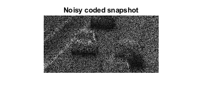

Contents
- CS 754 : Advanced Image Processing - Assignment 1
- 2 (a) Loading 'cars' video
- 2 (b) Generating coded snapshot
- 2 (c) What are A, x, and b?
- 2 (d) (e) patch-wise reconstruction from coded snapshot and code pattern
- 2 (d) (e) relative mean squared error (rmse)
- 2 (d) (e) plots
- 2 (f) With T = 5
- 2 (f) With T = 7
- 2 (h) With Flame Video
- 2 (h) Plots
CS 754 : Advanced Image Processing - Assignment 1
Karan Taneja - 15D070022
Sucheta Ravikanti- 1600401001
clear;
clc;
addpath(genpath('MMread'));
2 (a) Loading 'cars' video
time_frames = 3; height = 120; width = 240;
cars_video = load_video('./cars.avi', time_frames, height, width);
cars_video = cars_video./255;
2 (b) Generating coded snapshot
noise = 2/255; [noisy_coded_snapshot, code_pattern] = create_noisy_coded_snapshot( ... cars_video,noise); % showing coded snapshot imshow(noisy_coded_snapshot/max(noisy_coded_snapshot, [], 'all')); title("Noisy coded snapshot") hold off
2 (c) What are A, x, and b?
% x is the unknown original image of size H.W.T. % b is the vector of measurements of size H.W (linearized) % A is the measurement matrix of size (H.W) x (H.W.T)
2 (d) (e) patch-wise reconstruction from coded snapshot and code pattern
% x is the unknown patch in image of size (patch_size.patch_size.T). % b is the vector of measurements of size patch_size.patch_size % (linearized) % A is the measurement matrix of size (patch_size.patch_size) x ... % (patch_size.patch_size.T) patch_size = 8; % patch_stride = patch_size/2; epsilon = 1e-1; reconstruction = reconstruct_from_snapshot(noisy_coded_snapshot, ... code_pattern, patch_size, epsilon);
2 (d) (e) relative mean squared error (rmse)
mse = mean((cars_video - reconstruction).^2, 'all'); rmse = mse / mean(cars_video .^ 2, 'all'); fprintf("rmse = %0.4f \n", rmse);
rmse = 0.0212
2 (d) (e) plots
for t = 1:time_frames figure imshow(reconstruction(:,:,1)/max(reconstruction, [], 'all')) title(sprintf("Time step = %d", t)); end
2 (f) With T = 5
time_frames = 5; height= 120; width = 240; cars_video = load_video('./cars.avi', time_frames, height, width); cars_video = cars_video./255; noise = 2/255; [noisy_coded_snapshot, code_pattern] = create_noisy_coded_snapshot( ... cars_video,noise); % showing coded snapshot imshow(noisy_coded_snapshot/max(noisy_coded_snapshot, [], 'all')); title("Noisy coded snapshot") hold off patch_size = 8; % patch_stride = patch_size/2; epsilon = 1e-1; reconstruction = reconstruct_from_snapshot(noisy_coded_snapshot, ... code_pattern, patch_size, epsilon); mse = mean((cars_video - reconstruction).^2, 'all'); rmse = mse / mean(cars_video .^ 2, 'all'); fprintf("rmse = %0.4f \n", rmse);
rmse = 0.0407
2 (f) With T = 7
time_frames = 7; height= 120; width = 240; cars_video = load_video('./cars.avi', time_frames, height, width); cars_video = cars_video./255; noise = 2/255; [noisy_coded_snapshot, code_pattern] = create_noisy_coded_snapshot( ... cars_video,noise); % showing coded snapshot imshow(noisy_coded_snapshot/max(noisy_coded_snapshot, [], 'all')); title("Noisy coded snapshot") hold off patch_size = 8; % patch_stride = patch_size/2; epsilon = 1e-1; reconstruction = reconstruct_from_snapshot(noisy_coded_snapshot, ... code_pattern, patch_size, epsilon); mse = mean((cars_video - reconstruction).^2, 'all'); rmse = mse / mean(cars_video .^ 2, 'all'); fprintf("rmse = %0.4f \n", rmse);
rmse = 0.0846
2 (h) With Flame Video
time_frames = 5; height= 288; width = 352; cars_video = load_video('./flame.avi', time_frames, height, width); cars_video = cars_video./255; noise = 2/255; [noisy_coded_snapshot, code_pattern] = create_noisy_coded_snapshot( ... cars_video,noise); % showing coded snapshot imshow(noisy_coded_snapshot/max(noisy_coded_snapshot, [], 'all')); title("Noisy coded snapshot") hold off patch_size = 8; % patch_stride = patch_size/2; epsilon = 1e-1; reconstruction = reconstruct_from_snapshot(noisy_coded_snapshot, ... code_pattern, patch_size, epsilon); mse = mean((cars_video - reconstruction).^2, 'all'); rmse = mse / mean(cars_video .^ 2, 'all'); fprintf("rmse = %0.4f \n", rmse);
rmse = 0.0053

2 (h) Plots
for t = 1:time_frames figure imshow(reconstruction(:,:,1)/max(reconstruction, [], 'all')) title(sprintf("Time step = %d", t)); end